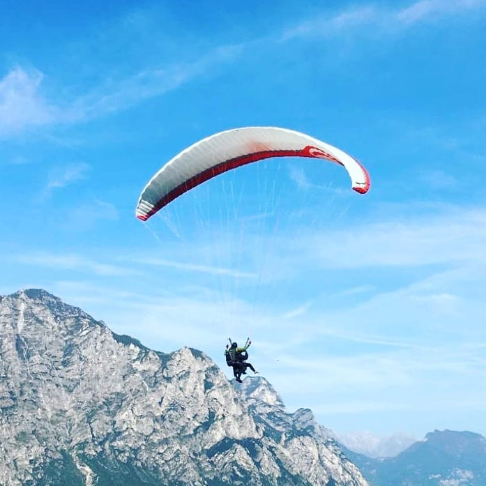
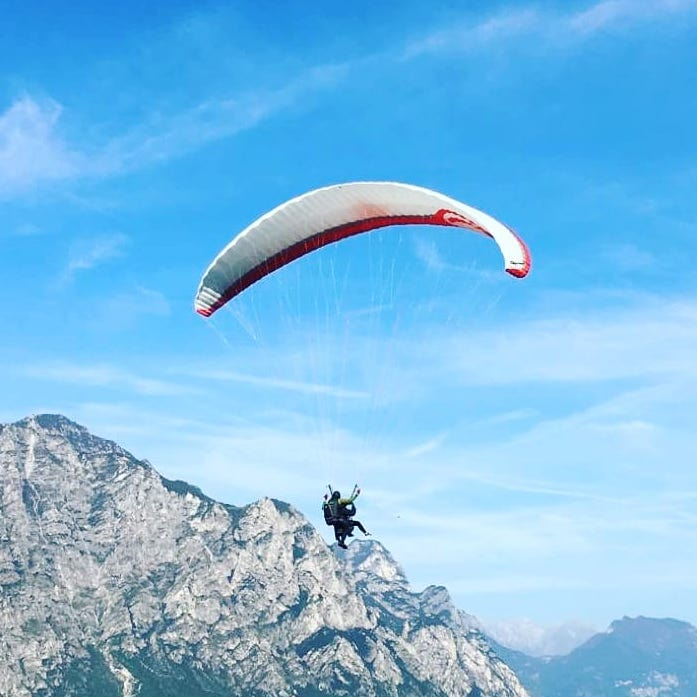
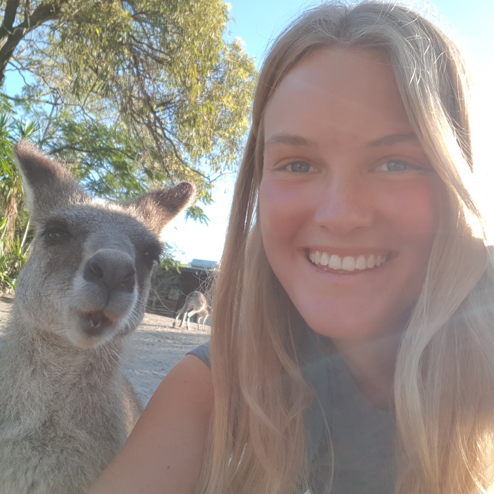
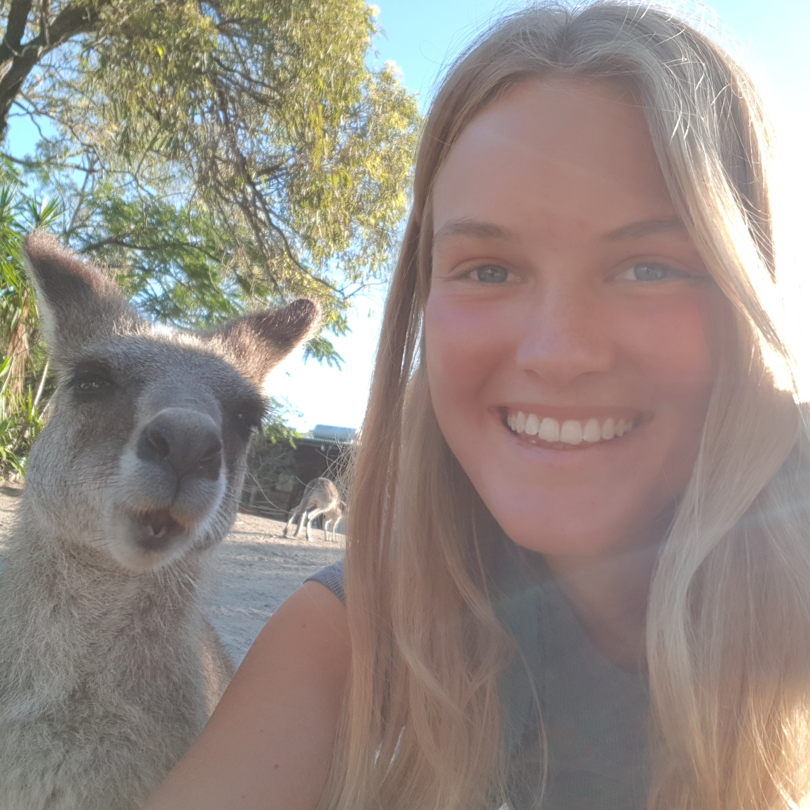

Where do I come from?
I was born and raised in a small town in Germany where I went to school and graduated in 2018. In order to figure out what to study, I decided to take a gap year.
Since I was really interested in astronomy, I moved to Heidelberg, Germany for a three-month international research internship at the “Haus der Astronomie / Max-Planck Insitute for Astronomy”, where I discovered my passion for programming.
The rest of the year I spent working at a FinTech company in my hometown and then travelling to Shanghai and Australia as well as solo-interrailing through Europe.
In summer 2019, I moved to The Hague to pursue the three-year international bachelor program User Experience Design, combining my interests in programming, psychology, design and speaking different languages.
Currently, my main focus is programming and User Interface Design.
What do I do when I don't do UX?
In my free time I play the guitar (both acoustic and electric), I go to concerts, film and edit videos, search for interesting new music, I go surfing or take long sunset walks at the beach, I train with my rowing team, travel, scribble or learn new languages (programming and linguistic).

 

 
